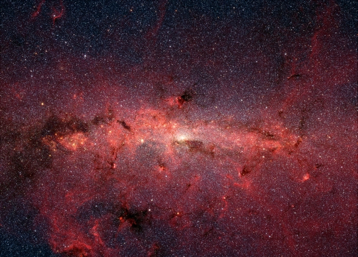

Across the Night Wall (Part 1)
by
Martin Isitt
During the early centuries of our mission my posting was that of chief navigator.
"I see nothing that indicates any kind of civilisation," said Sara Reed, the Mission Commander and current Captain of the Eternity. The statement was directed at me.
We were among a handful of Custodians loosely clustered around the console, while a holo-representation of the blue-green planet, fifty metres across, turned slowly over the astro-lab's main plate. The world was roughly Earth-sized, and sheathed in an atmosphere: the distance from its star allowed water to be liquid on the surface.
"How long until you can get a full resolution?" Sara Reed said.
"At our current rate of deceleration," I hazarded, "seven and a half years. Maybe eight. I've got a few more months of work left to do on the upgrades. If it doesn't give me anything more substantial then I'm going off shift until then."
With nothing more to see, the gathering began to disperse. As the others drifted back to their workstations, the Mission Commander lingered. "Will you be going straight into hibernation when you go of shift?" she casually enquired, whilst keeping her gaze fixed on the vast blue globe.
I nodded. "I think so," I said.
She sought me out a few days later. "I've been considering your suggestion," she told me over a light supper.
We were in one of the observation suits that blistered from the skin of the ship's inner habitat — a vast cylinder turning at the centre of the Resident's habitat, like two concentric drums. Kilometres beneath us artificial twilight cloaked a patchwork of farms and woodland. Webs of lights were coming on, marking out the roads. Glowing strands merged into the sprinkled clusters of towns and villages. Further up the gently curving landscape, just visible in the hazy distance, mountains shouldering forested mantles basked in manufactured daylight.
The observation suite was lit only by the waning day. Furtively I watched Sara. Waiting. Her face was half in shadow. She met my gaze and bestowed a rare smile upon me.
"I think I would like another relationship," she said, "with you."
I couldn't hold back a grin. "Are you currently involved with anyone else?"
"I have three affairs." She drained her wine glass and rolled the stalk between her fingers, thinking. "I would like to develop one into an engagement but I don't find any of them emotionally satisfying. None are with command staff, and I think they find my rank intimidating."
"What about Lyndon? She's an executive officer. Didn't you have an exclusivity contract with her?"
Sara answered this with a grunt. Night was fast filling the suite and I was finding it difficult to see her features in the gloom. Silhouetted against the dusk, her shoulders sagged.
I said: "Will you wait two months while I finish the sensor upgrades?"
"Yes, I'm going off shift around then. And I'm going in for an upgrade as well. Do you have any physical preference?"
I made a show of considering what she'd said. "Let me look at you," I joked. But to my surprise she ordered the interior light on, stood, lifted her arms and turned slowly on the spot. Sara was almost as tall as I was then, athletic and elegantly poised. Like me, she enjoyed the virtual immortality that was one of the benefits of our nano-enhanced immune systems. Her uniform hid nothing of her form. My eyes travelled up her legs and rested on the curve of her buttocks before moving on. When they reached her bald scalp I pursed my lips.
She noted my expression. "Hair?" she suggested.
"Long," I agreed. "Red or blond, either appeals. I'm also scheduled for an overhaul at the end of my shift."
"You could do something about that paunch and the jowls. You've been enjoying your food too much recently, haven't you?"
"Lack of quality rather than quantity. Anything else?"
She sat down again and poured us both another glass of wine. "Let's spend the night together and I'll tell you in the morning."
I agreed, but with some reservation. We'd have little opportunity to spend time with each other until my work on the sensor upgrades was completed. In the end it took me nearly four months.
"The difference is negligible," she said.
"Only in the visible spectrum," I responded defensively. At my command the planet zoomed out so that it was a complete sphere again. We were alone in the science lab's cavernous viewing chamber. Most of my staff had gone off duty and retired to the freezers for the in-flight duration, while the subsidiary core automated their workload. Constellations of passive consoles twinkled in the gloom all around us.
Sara took the seat next to mine. "Show me." Her tone was brisk but her hand had come to rest on my arm.
"Not much to see yet. The scan's still running. It'll take some time for all the data to be correlated. But once it's completed, it'll update continuously."
"Without supervision."
"Yes."
We both stared at the planet in silence.
"I've missed you," I said.
She nodded.
We stood up and walked side by side to the exit. Behind us the holo-plate powered down and the bright blue world faded away, leaving the chamber in darkness.
By the time we emerged from the cryo-tanks again, the Eternity had fallen into orbit around the planet. Twenty thousand Residents were preparing to descend to the surface. But there were still tests to be carried out before colonisation could begin. Planetary Science dropped atmospheric probes into low orbit to gather samples. We discovered that the cloud cover was thickly laced with complex protein molecules. To begin with we assumed it was simply a kind of airborne bacterial analogue. But astrobiology observed behaviour in the samples collected that proved beyond doubt that there was a form of intelligence present. The clouds were huge neurological colonies floating through the atmosphere, their thoughts radiating out into space.
After lengthy debate with the Residents, we called off the colonisation. We had no right to trespass upon the environment of this extraordinary culture.
Though they had no option but to agree, our mortal charges were unhappy with the decision. It would several thousand years or more before we reached the next habitable planet. Those Residents who now yearned for a world of their own would be long dead and forgotten. We sympathised, but would not be dissuaded. Our hulking vessel heaved itself out of orbit again, while we — myself, Sara and the rest of our shift — returned to the freezers to sleep the years away.
On we journeyed, travelling from one star system to the next, at each stop leaving behind enclaves of humanity. Inevitably, as centuries passed, we were changing — all of us. But I can't put a finger on a time when it all began to go wrong. Perhaps it was as we approached the edge of the Milky Way's spiral arm — the Night Wall. In this region of space the galactic compression waves were insufficient for star formation and vast, impotent dust clouds drifted aimlessly. Light-years of darkness stretched away before us: behind us, two hundred and fifty thousand years of journeying through the vacuum.
In the interstellar void resources were scarce, but every star system we encountered was an oasis of raw materials. With the passage of time came technological advancement. The ship's systems and components were continuously being improved and upgraded. So much so that by the time we set out across the Night Wall virtually nothing of the original Eternity existed.
And amongst the Resident population things changed. How could they not after so long a period of confinement within the ship's vast hull? Alas I, of all people, should have seen it. Perhaps I did, but dismissed it as some kind of delusion, a vestige of those strange dreams freighted with portent that visited me in the cryo-tank where centuries were compressed into moments. I was a realist and I didn't believe in omens. Notions of energies kindled in the heart of distant Earth. Hah! The Master Word from which all human speech is derived and which resides in the heart of every human born upon our homeworld's nurturing soil. It seems laughable, even now when I know the truth. These things were myths, concepts that had died out with the ancient religions they spawned. To entertain these fantasies in my calculations was to step upon the road to delusion, to give life to my dreams of that land of perpetual night.
At the time, we didn't even realise that something was wrong with the Universe.
Mythic was a small boy when he asked his nurse: "Why did the sun die?"
She smiled with patient condescension because children believe in myths and tales of legend.
"There is no 'why'," she had said. "It's just how the stories are told. One day, when you are a man, you will understand that we are the Sun, and our humanity is the one true light in the infinite darkness."
Now a man, a Watchman, standing at his post before the Great Door and looking into the endless night, he recalled those words and still didn't understand what she'd meant.
At his back the slope of grey crystal-form alloy reared upwards for miles, tapering into the utter blackness of the sky. A solitary star shone at the pinnacle of the Great Pyramid: The Tower of Observation, where the Monstruwacan used the sensitive instruments to scan the Land and record all that they saw. In front of him, a mile out, the Earth Current lit the nearby terrain with spectral blues. Posted at the Great Gate, Mythic was closer to the barrier than he'd ever been. His vision, enhanced by the visor of his helm, pierced the dark but he saw only stillness. And the shattered and burned remains of those beasts that had come too close.
Nevertheless, despite that evidence of the Earth Fire Circle's deadly power, being outside the Redoubt for the first time filled him with horror. His Night-Hearing, more acute than most, made him shiver right down to the soul. He felt utterly naked before the Night Land. Those mountain-sized Watchers waited with geological patience for something unknowable. And worse: the House of Silence.
Mythic's hand dropped to finger the grip of his Diskos. He found some comfort from the contact. The visor of his nightsuit occluded his view of those grim shapes; he made himself focus on the glow emanating from the Circle.
The Captain of the Full Watch arrived. "Don't let your mind linger on what lies beyond the Circle." His face was masked by his helm and there was no clue in his tone that his words were a reprimand. "When we speculate on what exists in the Land, be warned: there are things out there that know we're listening. Remember what you've been taught."
Mythic hesitated a moment, then recited, "We do not grant the forces that move in the Night Land names, but instead label them with reference to attribute and behaviour. To do otherwise is to invite them into our minds."
"Well remembered. Now put your words into practice, and don't concern yourself with those things that exist outside the bounds of your duty. Until the Sleep Time, you and the men of your Watch are responsible for the sanctuary of our people. Later, when you've learned to master your thoughts in the Land, you'll join the squads that patrol the Circle. Until then, Watchman, though you might be far from the Circle and safe from immediate danger, never underestimate that responsibility."
"I won't, Captain."
"Good."
He departed.
Alone again, Mythic tried to follow the advice he'd been given. It seemed impossible. The constant drone coursed through his subconscious mind, an unending torrent of whispers flowing just beneath the surface, its current so strong that sometimes he imagined it manifest on the edge of physical hearing, like the incessant buzz of tinnitus. Out here, unshielded by megatons of unyielding metal, it was always louder. If he closed his eyes it was worse. So he continued to stare, concentrating on the glow of the Circle, and scanned the aether searching for the voice in the noise.
The Voice.
It had always been there, different from the vile clamour. The faint wordless whisper was so submerged that only by an extreme effort of concentration was he able to diminish all the other sounds enough to hear it. He'd heard the voice all his life, and learned soon enough not to talk about it if he didn't want to invite ridicule. Nonetheless he remained certain that it existed outside of his imagination. It was real, and it was out there. He was also sure beyond all doubt that once he had known the owner of that voice.
To Across the Night Wall (Part 2)
© 2006 by Martin Isitt.
Spitzer infrared space telescope image of the Milky Way by NASA.